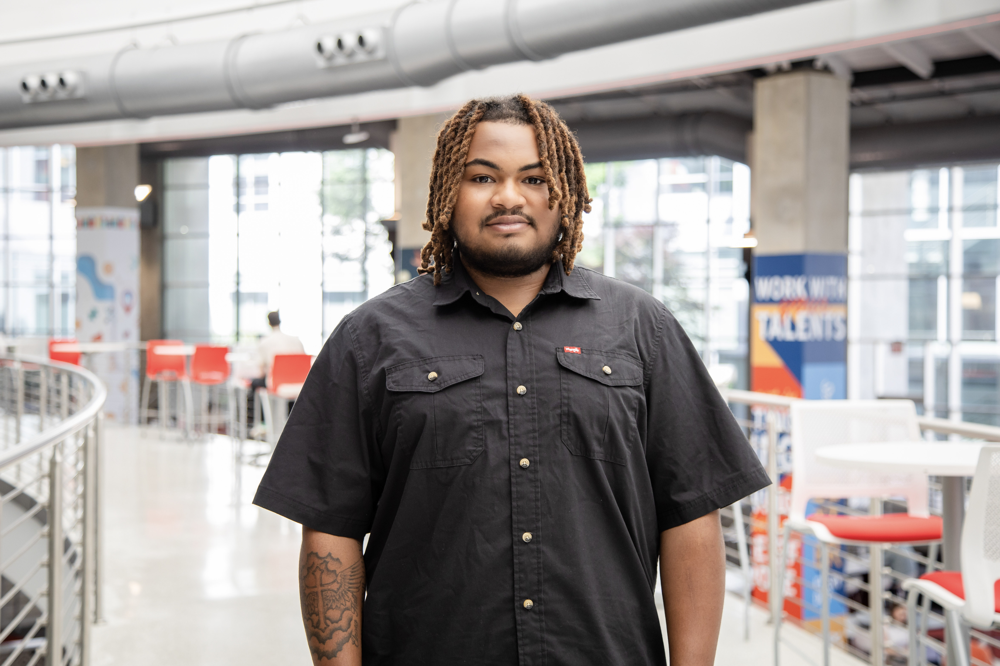

About Me
I’m a Computer Graphics Technology major at North Carolina A&T State University with a concentration in User Experience (UX). My work sits at the intersection of design, technology, and storytelling, where I focus on creating intuitive, user-centered digital experiences. Through hands-on projects and collaborative environments like my Road to Hire apprenticeship, I’ve developed a strong foundation in front-end development, problem-solving, and translating complex ideas into accessible solutions. Beyond technical skills, I bring a creative mindset shaped by my experience in content creation and social media strategy, where I’ve used design and data-driven decisions to increase engagement and build meaningful connections with audiences. I’m especially interested in how emerging technologies like artificial intelligence can enhance user experiences and improve decision-making in digital products.
Career focus
I'm pursing a career in UX/Product Design, with a growing focus on integrating artifical intelligence into user-centered solutions. My goal is to work in industries such as:
- Technology & Software Development
- Digital Media & Content Platforms
- E-commerce & Consumer Products
- AI-Driven Product Experiences
I'm particulary intersted in roles like:
- UX Designer / Product Designer
- AI Product Designer
- Front-End Developer (UX-focused)
- Digital Experience Designer
I aim to bridge the gap between design and intelligent systems, creating products that are not only functional but adaptive, personalized, and impctful.
Skills
- UX & UI Design
- Front-End Development (HTML, CSS, JavaScript)
- Interactive and Visual Design
- Branding and Visual Identity
- User-Centered Design Thinking
- Adobe Creative Suite (Photosshop, Illustrator, After Effects)
- AI Prompt Engineering
- AI Tool Evaluation
- AI-Assisted Design
- AI Workflow Integration
- Responsible AI Use
- Git & GitHub
Mindset
I approach design with a focus on growth and iteration, using feedback and testing to improve both the visual and functional aspects of my work. I am especially interested in creating digital products that balance creativity with usability.
